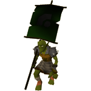

")
Geschichte der Goblins
Die Herkunft der Goblins| Die Goblins während der Götterkriege | Die Rebellion der Dorgeshuun
Der Bürgerkrieg der Dorgeshuun | Die Oberflächengoblins während des vierten Zeitalters | Die Schlacht auf der Schlammebene
Die Oberflächengoblins in der Gegenwart | Die Dorgeshuun heute
Der Bürgerkrieg der Dorgeshuun | Die Oberflächengoblins während des vierten Zeitalters | Die Schlacht auf der Schlammebene
Die Oberflächengoblins in der Gegenwart | Die Dorgeshuun heute
WICHTIGER HINWEIS: Dieser Artikel enthält Informationen, die im Lauf der Goblin-Abenteuerserie enthüllt werden - von Der verschollene Stamm, Tod den Dorgeshuun , Sigmunds Rache und Das Land der Goblins - bis zum Anfang des Auserwählten Befehlshabers. Vielleicht möchtet ihr erst die Abenteuer abschließen, bevor ihr den Artikel lest.
Die Herkunft der Goblins
Das Goblinvolk entwickelte sich in einer von RuneScape separaten Welt, zusammen mit Orks, Ogern und ähnlichen Kreaturen. Diese Ur-Goblins waren Jäger und Sammler, sie arbeiteten mit Werkzeugen aus Stein und lebten in kleinen Dörfern in sumpfigen Gegenden. In diesen Gemeinschaften gab es kleinere Konflikte, aber organisierte Kriegsführung war noch nicht erfunden worden.
Dieses Leben endete abrupt, als der Gott Bandos in jener Welt erschien und deren Bewohner zwang, ihn zu verehren und Monumente ihm zu Ehren zu bauen. Er brachte ihnen bei, wie man Landwirtschaft, Metallurgie und Krieg betreibt.
Die Goblins während der Götterkriege

Gegen Ende des Zeitalters spürte Bandos, dass sich ein Krieg zusammenbraute, also versammelte er all seine Völker und schuf eine riesige Armee. Er teilte die Goblins in 12 Stämme oder Regimenter auf, die alle von je einem General angeführt wurden, die Bandos unterstanden. Zwei der Stämme verkaufte er an andere Götter und erhielt im Gegenzug magische Kräfte. Die restlichen Stämme behielt er.
Bandos' Völker spielten alle eine bestimmte Rolle in seiner Armee, und der Kriegsgott sorgte dafür, dass sie diese perfekt ausführten. Die Orks wurden als schwere Infanterie eingesetzt: gut trainiert und ausgerüstet bildeten sie das Rückgrat der Armee. Oger und Ourgs fungierten als lebendige Belagerungsmaschinen: Sie schafften es, Stadtmauern einzureißen oder es mit ganzen Feindestruppen aufzunehmen. Die widerstandsfähigen Hobgoblins waren so mobil, dass sie im feindlichen Territorium Guerilla-Einsätze durchführten. Die Goblins standen ganz unten in der Rangordnung: Sie waren die Fußsoldaten, von allen von Bandos' Völkern am schwächsten und am schlechtesten ausgerüstet. Sie wurden als Kundschafter oder Kanonenfutter eingesetzt. Oft trieb man viele von ihnen in den Kampf, um den Feind weichzuklopfen, bevor sich die Ork-Infanterie ins Getümmel stürzte.

Die Rebellion der Dorgeshuun
Allerdings verehrten nicht alle Goblins Bandos. Als Bandos dem Stamm der Dorgeshuun gegen Ende der Götterkriege befahl, gegen einen übermächtigen Feind in die Schlacht zu ziehen, widersetzte sich deren Anführer, General Blutfaust, dem Befehl des Gottes und verhinderte die Vernichtung seines ganzen Stamms.
In der Nähe des Ortes, an dem heute Lumbridge liegt, befand sich eine riesige Spalte im Erdboden, die durch die enormen Energien aufgerissen worden war, die der Krieg der Götter freisetzte. Blutfaust befahl dem Stamm, in diese Spalte hinabzumarschieren und sich im daruntergelegenen Höhlensystem zu verstecken. Blutfaust selbst überlebte nicht lange genug, um sich ihnen dort anzuschließen - laut der Legenden der Dorgeshuun stand er an der Öffnung der Spalte und forderte Bandos trotzig heraus. Dieser zerschmetterte ihn mit einem göttlichen Wurfgeschoss, durch dessen Wucht die Höhlen versiegelt wurden und die Dorgeshuun unter der Erde festsaßen.
Leutnant Starkaxt, der Stellvertreter von Blutfaust, übernahm das Kommando und führte den Stamm tiefer hinab in die Höhlen, bis sie in einer großen Höhle ihr Lager aufschlugen. Nach und nach vergrößerten sie die Höhle und formten aus den Wänden ihre Häuser, sodass die Stadt Dorgesh-Kaan entstand. Mit der Zeit entwickelten sich die Goblins zu den Höhlengoblins, die wir heute kennen.
Anfangs waren die Dorgeshuun genauso militaristisch wie an der Oberfläche, und in der Stadt herrschten nacheinander mehrere Generäle, die die absolute Macht innehatten. Einer der Generäle berief einen Ältestenrat ein, welcher allerdings lediglich eine beratende Funktion ausübte. Da es keine Feinde gab, die die Stadt von außen bedrohten, wurde es allmählich offensichtlich, dass ein militärischer General nicht die Art von Führungsperson war, die man brauchte.
Der Bürgerkrieg der Dorgeshuun
Die zivile Bevölkerung distanzierte sich immer mehr von der Militär-Hierarchie, und die Bürger kamen zu der Überzeugung, dass der Rat das Sagen haben sollte. Ein Referendum wurde abgehalten, dessen Ergebnis zeigte, dass die Bürger eine Republik befürworteten, aber der letzte General, Knochenhelm, weigerte sich, den Machtverlust zu akzeptieren. Schließlich marschierte ein Mob bestehend aus Bürgern zum Palast des Generals, welcher seinen Soldaten befahl, die Menschenmasse anzugreifen. So begann der Bürgerkrieg der Dorgeshuun.
Die Gruppe der Republikaner war zahlenmäßig überlegen, aber die meisten der ausgebildeten Soldaten hielten dem General die Treue, und diese Gruppe hatte die restliche magische Ausrüstung, die der Stamm von der Oberfläche mitgebracht hatte, in ihre Gewalt gebracht. Nach einer blutigen Schlacht in Dorgesh-Kaan wurde Knochenhelm aus der Stadt vertrieben und schlug ein Lager in den nahe gelegenen Höhlen auf.
Schließlich wurde General Knochenhelm besiegt - allerdings nicht durch die Miliz der Rebellen, sondern durch die mangelnde Baukunst seiner Armee. Durch den Tunnelbau waren die Felsen in der Umgebung des Lagers gelockert worden, und begruben schließlich den Großteil seiner Armee unter sich. Die wenigen überlebenden Soldaten ergaben sich, und der Stadtrat sorgte für den Wiederaufbau der Stadt. Seit dieser Zeit regierte der Stadtrat in Dorgesh-Kaan und es gab keine größeren Konflikte.
Die Oberflächengoblins während des vierten Zeitalters

Als die Götterkriege endeten, verbannte Guthix die anderen Götter aus RuneScape. An diese Veränderung konnten sich Bandos' Völker nur schwer gewöhnen. Da sie weder Gegner noch einen Gott hatten, der ihnen Befehle gab, fingen sie an, sich gegenseitig zu bekämpfen. Territorial- und Ressourcenkonflikte entwickelten sich zu einem jahrhundertelangem Krieg zwischen den Goblins und den Ogern, der in dem Versuch der Oger gipfelte, alle Goblins zu vernichten. Ursprünglich hatten die Goblinstämme zusammen mit den Ogern die Feldip-Hügel bevölkert, aber der Krieg trieb die Goblins nach Norden, in das Gebiet, das wir heute als Kandarin kennen. Dort gerieten sie in einen Konflikt mit den Gnomen. Die Goblins und Gnomen kämpften um die Herrschaft über das Land, aber die Gnomen nutzten Trugbilder von riesigen Schildkröten, um die Goblins in die Flucht zu schlagen. Diese waren gezwungen, weiter nach Norden zu ziehen und sich niederzulassen, wo immer sie Platz fanden.
Im Laufe des vierten Zeitalters begannen die Menschen und Gnomen, Stadtmauern zu bauen, sodass es für die Goblins immer schwieriger wurde, ihnen Vorräte zu stehlen. Mit den Goblins ging es weiter bergab: Sie hungerten nicht nur und hatten keine Heimat, schließlich bekämpften sich die Stämme auch gegenseitig.
Die Schlacht auf der Schlammebene
Der Goblinkrieg gipfelte in einer Schlacht, an der alle übrig gebliebenen Stämme beteiligt waren. Mehrere Tage lang gab es schwere Regenfälle, sodass die Füße der Goblins den Boden aufwühlten und die Ebene in einen Morast verwandelten. So kam das Schlachtfeld zu seinem Namen: die Schlammebene. In der Schlacht wurden so viele Goblins getötet, dass es wahrscheinlich schien, dass dem ganzen Volk der Untergang bevorstand.
Die Schlacht endete, als ein Fußsoldat der Goblins namens Naselhoff verkündete, dass Bandos, der große, hohe Kriegsgott im Traum zu ihm gesprochen habe. Laut seines Traums befahl er den Goblins, nicht mehr gegeneinander zu kämpfen und auf die Ankunft eines auserwählten Befehlshabers zu warten, der die Goblins eines Tages zum Sieg über die ganze Welt führen würde. Die Stammesgeneräle schenkten Naselhoff Glauben und schlossen einen Waffenstillstand.
An der Stelle, an der die Schlacht stattgefunden hatte, bauten die Goblins einen Tempel; Naselhoffs Vision wurde zur Grundlage der modernen Goblinreligion.
Die Oberflächengoblins in der Gegenwart

Heute ist die Identität der einzelnen Goblinstämme nicht mehr so ausgeprägt wie einst. Die Stämme haben sich miteinander vermischt und obwohl die alten Stammessymbole noch auf Goblinflaggen zu finden sind, identifizieren sich heute nur wenige Goblins mit einem bestimmten Stamm. Die Gesellschaft der Goblins basiert auch heute noch auf militärischen Grundlagen: So werden die Anführer in den Dörfern immer noch Generäle genannt. Die Werte, die Bandos ihnen eingeimpft hatte, werden in ihrer Kultur immer noch hochgehalten: Mut und blinder Gehorsam werden gutgeheißen, eigenständiges Denken wird misstrauisch beäugt. Die wenigen Goblins, die des Lesens mächtig sind, haben meistens ein Exemplar des Buchs des großen, hohen Kriegsgotts bei sich, in welchem der alte Goblinglaube und die Prophezeiung von Naselhoff zusammengefasst sind. Frommere Goblins pilgern oft zum Tempel auf der Schlammebene, wo der Hohepriester - der geistliche Anführer aller Goblins - lebt.
Goblinnamen bestehen fast immer aus einem unappetitlichen Wort, das mit einem Körperteil oder einer Waffe kombiniert wird. Ihr fehlendes Selbstbewusstsein lässt sich daran erkennen, dass sich die Namen von heroischen, kriegsverherrlichenden Namen im dritten und vierten Zeitalter (Blutfaust, Knochenhelm) zu den bescheideneren (Warzgesicht, Schiefnase) von heute entwickelt haben. Die Oberflächengoblins sind zwischen zwei gegensätzlichen Selbsteinschätzungen hin- und hergerissen: Einerseits glauben sie, dass sie das auserwählte Volk des großen, hohen Kriegsgotts und die größten Krieger auf RuneScape sind, andererseits wissen sie insgeheim, dass sie das unwichtigste Volk auf RuneScape sind, das auf die Abfälle größerer Zivilisationen angewiesen ist und keinem erfahrenen Krieger irgendwelche Probleme bereitet. Mit diesem Gegensatz setzen sie sich auf traditionelle Goblinart auseinander: Sie denken nicht darüber nach.
Die Dorgeshuun heute

Der Stadtrat der Dorgeshuun besteht aus sieben gewählten Ratsmitgliedern, die den angesehenen Titel 'Ur-' anstelle der ersten Silbe ihres Namens tragen. Oft ist der Rat konservativ und übervorsichtig, außerdem ist er bekannt dafür, Entscheidungen lange und mit Bedacht zu erwägen. Während der Jahre der Isolation war dies für die Stadt kein Problem, aber seit Dorgesh-Kaan Kontakt zur Oberfläche aufgenommen hat, hat der Rat Probleme, mit den sich überschlagenden Ereignissen mitzuhalten.
Die Dorgeshuun betrachten Götter als Dämonen, als Verkörperung des Bösen. Sie unterscheiden nicht zwischen verschiedenen Göttern - ihrer Meinung nach sind alle gleich böse, weshalb sie mit keinem von ihnen etwas zu tun haben wollen. Bevor die Stadt Kontakt zur Oberfläche aufnahm, lernten die Goblinkinder weder von der Existenz der Götter noch von der Existenz der Oberfläche.

Weitere Artikel in Diverse Anleitungen
|
|
|
Weiterführende Informationen Wenn euch dieser Artikel nicht weitergeholfen hat, könnt ihr in den folgenden Kapiteln der RuneScape-Webseite mehr Informationen finden:
|
|